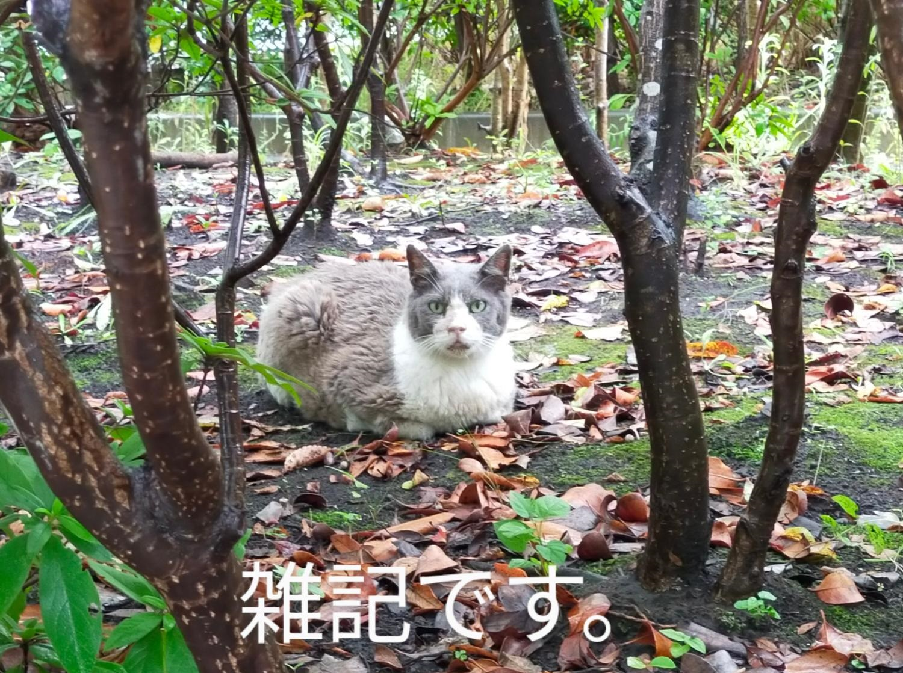

おでんが終わらない話
今朝、ごみを出しに家を出たら、秋の風が吹いていて、ずいぶん爽やかでした。涼しくなってきたので、おでんはじめました。レシピをあげようと思っていたのですが、うちのおでんは毎回味が違うのであげられず…雑記にしました。今回のおでんは椎茸＋だしパックでだしをひいて、醤油（濃口・薄口）とみりん、砂糖と塩で調味しました。
実家のおでんは甘めの味付けで、たこが入っていました（関西風でしょうか）、結婚してから、おでんにジャガイモをいれるようになりました。大根の面取りは、意味あるのかしらと思いつつ、毎回やっています。
おでんのネタを買う分量が毎回分かりません。食べたいネタを全部買ってしまうと、3日も4日もおでんが続く分量になってしまいます。実際、1度おでんを作ると、最低でも3日はおでんをいただいて、間にカレーうどんをはさんだり、さらにそのカレーをドリアにしたり（カレーうどんやドリア分は取り分けて作っています）して、だしベースの食事が平日5日間続いたりします。料理の手間が減るので、楽でいいのですが、なんとなく申し訳ない気持ちになってしまいます。
さらに、おでんに合わせるおかずも分かりません…。練り物は意外とカロリーが高いので（さらに1回に結構な量をいただくので）、おかずをがっつり1品作ってしまうと食べ過ぎかなぁと思い、毎回枝豆を添えています。ちなみに、近夏は少なくとも2日に1日くらいの割合で、枝豆を食べています。わが家の夏の食費のうち、6分の1程度は枝豆代です。こう書いているととても自分は料理好きとは言えないな…と思ったりします。
今夜は、おでんのだしを水で薄めてカレールウを溶いて、カレーうどんにし、茹でたトウモロコシを添えます。また、明日はおでんに戻る予定です。
我が家では、秋から冬にかけては、おでんとサンマの塩焼きが繰り返されます。フィッシュロースターでサンマを焼いて、大根をおろして、スダチを添えて…今年は何本食べれるでしょうか。とてもサンマが食べたくなってきました。週末、探してみます。